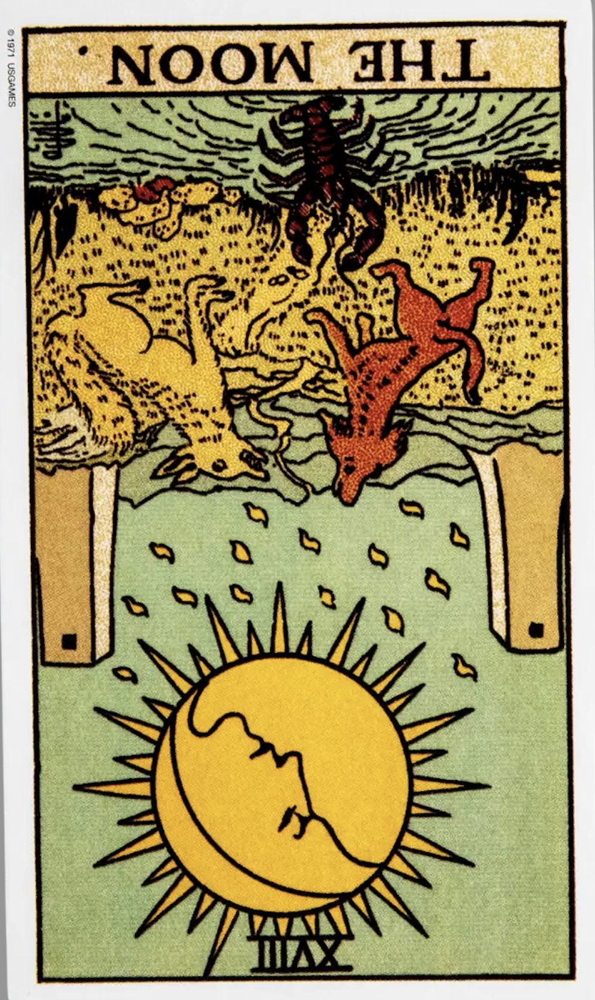
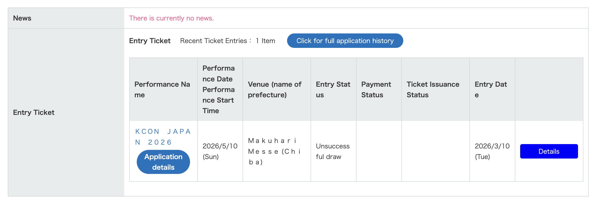

The Moon (Reversed)

Luck: Uncertainty begins to clear. Something that once felt confusing or unclear may reveal its outcome or true nature.
Mood: A shift from anxiety to clarity. Less overthinking, more acceptance of what is real.
Possible Event: I might receive an answer or result that resolves previous uncertainty. It could also reveal that things are not exactly as I imagined—either simpler or more complex than expected.
Luck: The day brought a sense of resolution. Something that had been unclear finally became concrete.
Mood: I felt less anxious once the uncertainty was gone. Even if the result wasn’t perfect, it was easier to accept than not knowing.
Event: I got the result of the ticket draw. The outcome made things clearer—no more guessing or overthinking. It wasn’t exactly how I imagined it would be, but it helped me settle my thoughts.
